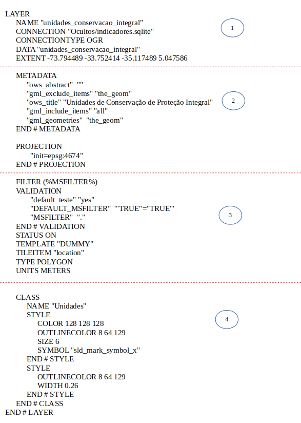
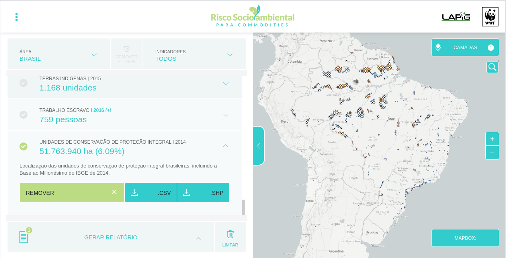

Servidor de Mapas
O OWS Server é responsável por encaminhar as requisições ao Mapserver a fim de gerar a visualização dos dados geográficos e organizar para que as imagens geradas sejam armazenadas em cache para melhorar o desempenho em requisições futuras. O código-fonte para o OWS Server se encontra no repositório Github do LAPIG/UFG.

Devido a facilidade em lidar com a arquitetura de WebServices, o código em NodeJS foi criado para também realizar o controle de cache das imagens processadas pelo Mapserver. Para tal, uma customização foi criada a fim de se associar uma chave (cacheKey) a cada imagem de cada camada configurada no Mapserver. Esta imagem é armazenada em um sistema de arquivos (pasta) chamada OWS-Cache, de modo que, em futuras requisições para uma determinada imagem, é verificada se a imagem já existe na OWS-Cache ou não. Caso exista, a imagem é retornada na requisição, caso não exista, o código NodeJS envia a requisição para o Mapserver processar e gerá-la, armazenando-a no OWS-Cache. O método que realiza esta verificação é o método OgcServer.ows que faz parte do Controlador da aplicação em NodeJS.
src/controllers/ogc-server.js
OgcServer.ows = function(request, response) {
var params = Internal.getParams(request);
response.setHeader("Access-Control-Allow-Origin", "*");
Internal.setHeaders(params, request, response);
var cacheKey = Internal.getCacheKey(params);
if(cacheKey && (config['cacheEnable'] || Internal.isWmsGetCap(params)) ) {
Internal.doRequestWithCache(cacheKey, params, response);
} else {
Internal.doRequest(params, response);
}
}
Esta customização pode ser encontrada no código NodeJS no repositório específico para o código NodeJS no Github. A configuração da pasta onde serão gerados os caches é feita no arquivo config.js na linha 41 através da variável cacheDir.
Serviço de interoperabilidade
A interoperabilidade é uma tecnologia que possibilita o compartilhamento de dados entre sistemas, independente do local físico de armazenamento e da tecnologia utilizada em cada servidor de dados.
No Geoprocessamento, a interoperabilidade pode ser aplicada para promover o intercâmbio de dados geográficos entre diferentes softwares de SIG. O OCG (Open Geospatial Consortium, Inc.) é uma organização que tem como objetivo principal viabilizar o intercâmbio de dados geográficos através da criação de especificações que simplificam a interação entre diferentes fontes de dados. Desta forma, os principais serviços especificados pela OGC são:
- Web Map Service - WMS: produz mapas dinâmicos partir de dados georreferenciados em um servidor remoto. Esses mapas são geralmente apresentados no formato de figura (PNG, JPEG ou GIF). Também é possível consultar os atributos dos elementos que compõem os mapas.
- Web Feature Service - WFS: define um serviço para recuperação de objetos (features) espaciais. Diferentemente do WMS, o WFS devolve o dado e não uma "figura" do dado.
- Tile Map Service - TMS: define um serviço que fornece imagens de dados geográficos a partir de URLs para porções (tiles) definidas pelo conjunto de coordenadas {z} {x} {y} do dado georeferenciado. O TMS é mais amplamente suportado pelos navegadores Web.
- UTFGrid: usam uma combinação de codificação JSON e arquivos grid ASCII que estão ao lado de cada bloco de imagem do mapa. Desta forma, uma tabela de pesquisa em JSON fornece o conjunto completo de atributos que viabiliza a devolução de dados sobre aquele grid, permitindo interatividade com o mapas.
Desta forma, uma representação visual da interoperabilidade entre serviços pode ser encontrada no link e apresentada abaixo.

Por fim, a tabela abaixo apresenta os tipos de serviços fornecidos pelo Risco Socioambiental bem como suas URLs de acesso, onde <ows_host> representa o domínio onde o OWS Server está hospedado e <layername> representa a camada configurada no Mapfile:
| Tipo de Requisição | Fonte | Descrição | URL |
|---|---|---|---|
| WMS | OWS Server | Retorna uma imagem com a legenda da camada (<layername>) especificada no mapfile.. |
https://<ows_host>/ows?TRANSPARENT=TRUE&VERSION=1.1.1&SERVICE=WMS&REQUEST=GetLegendGraphic&layer=<layername>&format=image/png |
| WMS | OWS Server | Retorna uma imagem com a composição de camadas identificadas pelas layers, com o foco no enquadramento para a geometria definida pela função ST_EXTENT do Postgis. Por fim, o parâmetro <sql_applied_on_MSFILTER> especifica a query que deverá ser aplicada para filtrar dados em todas as camadas que possuam MSFILTER em sua configuração no Mapserver. |
https://<ows_host>/ows?SERVICE=WMS&REQUEST=GetMap&VERSION=1.1.1&layers=<layername1>,<layername2>, ... &bbox=<bounding_box>&TRANSPARENT=TRUE&srs=EPSG:4674&width=768&height=768&format=image/png&styles=&ENHANCE=TRUE&MSFILTER=<sql_applied_on_MSFILTER> |
| TMS | OWS Server | Retorna uma imagem com a composição de camadas identificadas pelas layers, com o foco no enquadramento para a geometria definida pela função ST_EXTENT do Postgis. Por fim, o parâmetro <sql_applied_on_MSFILTER> especifica a query que deverá ser aplicada para filtrar dados em todas as camadas que possuam MSFILTER em sua configuração no Mapserver. |
https://<ows_host>/ows?layers=<layername>&MSFILTER=<sql_applied_on_MSFILTER>&mode=tile&tile=<{z}>+<{x}>+<{y}>&tilemode=gmap&map.imagetype=png |
| TMS | Mapbox | Retorna a composição do mapa Geopolítico fornecido pela Mapbox | https://api.tiles.mapbox.com/v4/mapbox.light/<{z}>/<{x}>/<{y}>.png?access_token=<chave_de_acesso>. |
| TMS | Google Maps | Retorna a composição de imagens do mapa fornecido pela API do GoogleMaps. | https://mt{0-3}.google.com/vt/lyrs=m&x=<{x}>&y=<{y}>&z=<{z}> |
| TMS | World Shaded Relief | Retorna a composição de mapas de Relevo fornecido pelo ArcGis. | https://server.arcgisonline.com/ArcGIS/rest/services/World_Shaded_Relief/MapServer/tile/<{z}>/<{y}>/<{x}> |
| UTFGrid | OWS Server | Retorna os dados referentes aos atributos definidos na camada fornecida pelo OWS Server para o |
https://<ows_host>/ows?layers=<layername>&MSFILTER=<sql_applied_on_MSFILTER>&mode=tile&tile=<{z}>+<{x}>+<{y}>&tilemode=gmap&map.imagetype=utfgrid |
Processo de atualização
Um dado geográfico é disponbilizado pelo Mapserver como uma camada. Assim como abordado na seção de serviços de interoperabilidade os dados devem estar armazenados em uma pasta de catálogo dos dados (pasta catalog) configurável no arquivo config.js através da variável cacheDir.
O Mapserver utiliza um arquivo de configuração para renderização de dados geoespaciais chamado de Mapfile. O principal objetivo do Mapfile é definir as camadas que podem ser "desenhadas" pelo Mapserver, como ler estes dados (uma vez que eles podem ser vetores ou matrizes) e como renderizá-los, definindo cores, símbolos, rótulos, legendas e etc. Desta forma, o Mapfile inclui informações sobre:
- Quais camadas devem ser renderizadas;
- Onde está o foco geográfico do mapa;
- Qual projeção está sendo usada;
- Qual o formato gráfico de saída;
- Configuração da legenda e a escala utilizada;
As duas figuras abaixo apresentam exemplos do Mapfile da camada de Área Plantada de Milho como exemplo de mapfile para dados vetoriais e matriciais respectivamente, ambos presentes na plataforma Risco Socioambiental. Portanto, segue a especificação de cada item destacado na imagem:

-
Apresenta o nome da camada (NAME), bem como a fonte de onde este dado será carregado (CONNECTION). No exemplo este dado é acessado pela comunicação com o SQLite. Além deste, temos também o parâmetro EXTENT que irá informar a extensão em que o dado se encontra, no exemplo abaixo foi definida a extensão de todo o Brasil.
-
Apresenta os metadados e a projeção utilizada na camada;
-
Apresenta o parâmetro FILTER (MSFILTER) que irá receber a filtragem aplicada ao dado por meio do runtime substitution;
-
Define uma classificação para os dados a fim de customizar a coloração de acordo com um critério. A classificação estabelecida também irá compor a legenda. No exemplo, é aplicada as cores cinza (preenchimento) e azul (bordas).
Por fim, o Mapfile utilizado para disponibilizar todas as camadas presentes no Risco Socioambiental está na pasta compartilhada do projeto no link.
Disponibilização da camada no Application Server
Após a criação da camada no OWS Server, para que esta camada seja apresentada na interface Web do Risco Socioambiental é necessária a sua inserção no Application Server. A fim de facilitar a disponibilização de diversas camadas, foi criada uma estrutura nomeada de metadata que descreve as principais configurações de uma camada a ser apresentada no Risco Socioambiental, tais como: filtros de dados, tipos diferentes de camadas e outros. A estrutura completa do descriptor encontra-se no repositório do projeto no Github, especificamente no arquivo indicadores.js.
Segue abaixo as configurações das camadas apresentadas acima dentro da estrutura do descriptor, um exemplo da camada de Unidades de Conservação de Proteção Integral.
server/controllers/indicadores.js
module.exports = function(app) {
var Indicadores = {};
Indicadores.metadata = [
{
"id": "unidades_conservacao_integral",
"categ": ["Ambiental"],
"nome": "Unidades de Conservação de Proteção Integral",
"descricao": "Localização das unidades de conservação de proteção integral brasileiras, incluindo a Base ao Milionésimo do IBGE de 2014.",
"unidade": "ha",
"regiao": "Brasil",
"area_ha": '',
"valor": [],
"ano": [],
"tipo": "espacial",
"bbox": "-73.9904499673534,-33.7515830040535,-28.835907629926,5.27184107509129",
"DB":{
"Columm": "AREA_HA",
"Table": "unidades_conservacao_integral_regions_view",
"Group": "",
"process": function(rows,metadata) {
metadata['valor'] = [rows[0].AREA_HA];
metadata['ano'] = [rows[0].ANO];
}
}
},
]
}
Os diversos parâmetros setados são interpretados pela aplicação Front-end em Angular, de modo a criar a interface apresentada na imagem abaixo. Aqui é onde configuramos Nome, Descrição, Categoria, dentre outras informações que serão populadas por meio da tabela do banco de dados que também é informada acima.
